Punctuation Restoration for Mental-Health Counselling Text
Augnito · AI Researcher assignment · complete study guide (simple explanations, architecture diagrams, results, interview prep)
- The problem in plain words
- The whole system on one page
- The dataset and what it looks like
- Creating the synthetic dataset
- Pre-processing details
- Exploratory data analysis (EDA)
- Background: transformers in 5 minutes
- Model 1 – the tagger (internal LM)
- Pre-trained baselines (zero-shot)
- Fine-tuning on the domain
- Model 2 – GPT-2 rescoring (external LM)
- How we measure quality
- Results
- Test-result analysis (EDA on predictions)
- Challenges and how they were solved
- Why each choice was made
- Limitations and future work
- Code map and how to run
- Interview questions and answers
- Glossary
1. The problem in plain words
A speech-recognition (ASR) system like Augnito's turns a doctor's voice into words. Speech has no visible punctuation, so the raw output looks like this:
it sounds like a tough time and its normal to feel down have you talked to anyone about it
Punctuation restoration puts the marks back so a human can read it and downstream NLP (sentence splitting, entity extraction, report structuring) works properly:
it sounds like a tough time, and its normal to feel down. have you talked to anyone about it?
Labels used (4 classes):
| label | meaning | characters folded into it |
|---|---|---|
| O | no punctuation after this word | – |
| COMMA | a short pause inside a sentence | , ; : - (dash) |
| PERIOD | end of a statement | . ! |
| QUESTION | end of a question | ? |
This 4-class scheme is the standard one used in the punctuation-restoration literature (e.g. the IWSLT
benchmark), which makes the results comparable to published work. ! is folded into PERIOD because it
is rare (972 in the whole raw data) and both end a sentence; ; : - are folded into COMMA because they are
all sentence-internal pauses.
2. The whole system on one page
The figure shows both phases. Top: how the data and models are built (offline). Bottom: what happens to one input at prediction time. The two language models the assignment asks for are highlighted: the internal LM lives inside the tagger (its pre-trained transformer encoder); the external LM is a separate GPT-2 that re-ranks the tagger's candidate outputs.
3. The dataset and what it looks like
Source: Kaggle "NLP Mental Health Conversations" (train.csv). Each row is a question a person asked
online and one answer written by a licensed psychologist.
| column | what it is | used? |
|---|---|---|
Context | the user's message (995 unique questions) | no (assignment says use Response) |
Response | the psychologist's reply – long, well-punctuated professional English | yes – source of all training text |
Basic facts: 3,512 rows, 4 missing responses, 760 fully duplicated rows, 2,479 unique responses; one question has on average 2.8 different answers (max 47).
Features and labels after our processing
For the model, one example = a list of words (the feature) and a list of the same length of tags (the label):
4. Creating the synthetic dataset
src/punct/data.py, run by scripts/01_build_dataset.py).Why random windows?
If every training example were exactly one response, the model would learn a shortcut: "the last word is always followed by a period". Real ASR text arrives as a continuous stream cut into chunks at arbitrary places. By concatenating responses and cutting at random positions, a window can start in the middle of a sentence and end in the middle of another, so the model has to really read the words to decide.
Validation and test are not windowed: each full response is punctuated end-to-end with the same sliding-window inference used in production, so evaluation measures the real system.
5. Pre-processing details (what the assignment asked for)
| requirement | what we did | why |
|---|---|---|
| Removing special characters | URLs, e-mails, base64 image blobs, HTML tags, emoticons, quotes, brackets, * # + / removed; hyphen/slash compounds split (self-esteem → self esteem); & → and, % → percent | The input should look like ASR output: only words. Kept apostrophes (don't) because ASR outputs contractions. |
| Lower-casing | All words lower-cased | Capital letters would leak the answer ("…time Have" ⇒ a period before "Have"). |
| Tokenisation | Two levels: (1) whitespace word tokens = units we label; (2) the transformer's own sub-word tokeniser (WordPiece / SentencePiece) inside the model | Labels belong to words; models need sub-words. Alignment explained in §8. |
| Missing values | 4 empty responses dropped | Nothing to learn from. |
| Duplicates | 760 duplicated rows + 438 responses that became identical after cleaning dropped | Duplicates across train/test would inflate the score (leakage). |
| Train/validation split | 80/10/10 train/val/test by response, seed 42 | Val for tuning (epochs, λ, β); test touched only once for the final table. |
Cleaning – before and after (real example)
RAW : ...hang out with.Seriously, the social context in which a person lives is a big
influence in self-esteem.Otherwise, you can go round and round...
CLEAN: ...hang out with. Seriously, the social context in which a person lives is a big
influence in self-esteem. Otherwise, you can go round and round...
INPUT: ... hang out with seriously the social context in which a person lives is a big
influence in self esteem otherwise you can go round and round ...
LABEL: ... with/PERIOD seriously/COMMA ... esteem/PERIOD otherwise/COMMA ...
6. Exploratory data analysis (train split)
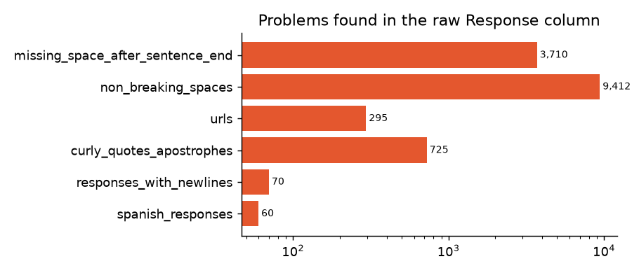
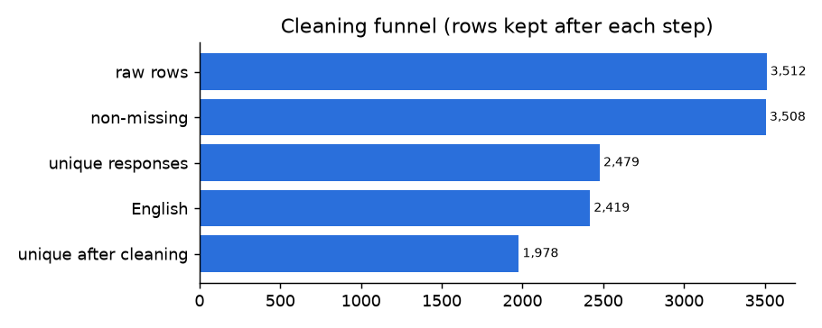
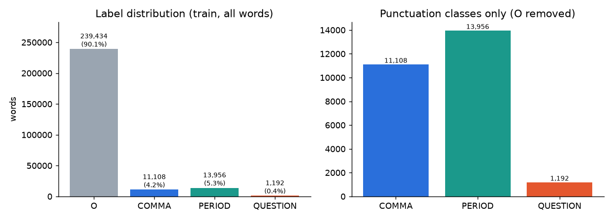
- Heavy imbalance. A model that never predicts punctuation is already 90% "accurate". That is why accuracy is useless here and we report per-class F1.
- QUESTION is rare (1,192 training examples). Counsellors mostly make statements; the few questions are often rhetorical ("have you considered…?"). Expect the lowest and most variable score on this class.
- Class shares are the same in train/val/test (COMMA 4.2/3.9/4.2%, PERIOD 5.3/5.4/5.2%, QUESTION 0.45/0.54/0.45%) → the random split is representative.
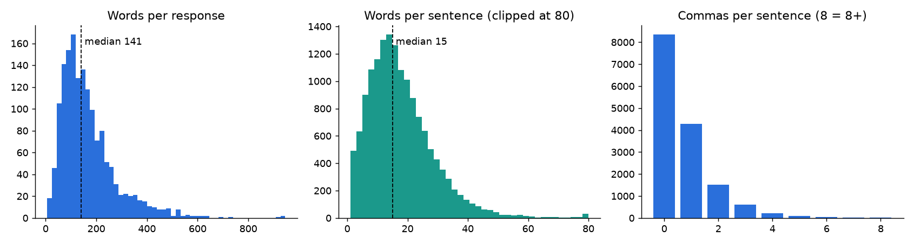
Responses (median 141, max 946 words) are longer than one model window, which is why inference needs sliding windows. Sentences are short enough (75% ≤ 23 words) that a 100-word window always contains several complete sentences of context.
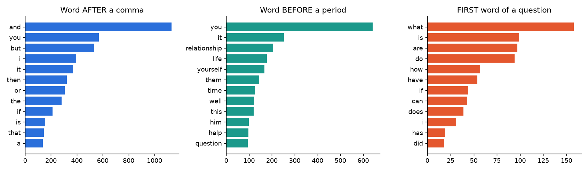
These cues are what the models learn. A comma is very often followed by a conjunction (and 1,133×, but 533×); questions start with auxiliaries/wh-words (what, is, are, do, how). Note the question cue is at the start of the sentence while the label is at the end – the model needs long-range context, which is exactly what self-attention gives.
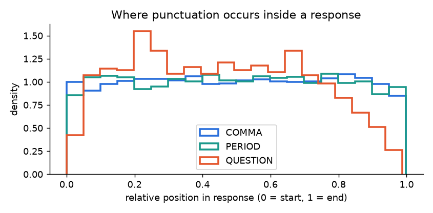
7. Background: transformers in 5 minutes
- Self-attention: for each word, compute how relevant every other word is (a softmax over dot-products of "query" and "key" vectors) and take a weighted average of their "value" vectors. Many attention "heads" run in parallel.
- Bidirectional encoder (BERT, DistilBERT, XLM-RoBERTa): every word sees words on both sides. Pre-trained with masked-language-modelling (hide 15% of words, predict them). Perfect for tagging, because a punctuation decision depends on the next words too ("…time and…" vs "…time. Have…").
- Causal decoder (GPT-2): each word sees only words to its left; pre-trained to predict the next token. It gives a probability for a whole sentence – ideal for judging how natural a punctuated sentence is.
- DistilBERT: a 6-layer, 66 M-parameter compressed BERT (40% smaller, ~60% faster, keeps ~97% of BERT's quality). XLM-RoBERTa: RoBERTa trained on 100 languages (base 278 M / large 560 M).
8. Model 1 – the tagger (internal language model)
src/punct/tagger.py). The pre-trained encoder is the internal language model.Long documents: sliding-window inference
A response can have 900+ words, but we feed the model 100-word windows that overlap by 50 words. Each word keeps the prediction from the window in which it has the most context on both sides (it is farthest from a window edge). The very start and end of the document are treated as true edges, not window edges.
9. Pre-trained end-to-end baselines (zero-shot)
The assignment asks to compare fine-tuning against "pre-trained (baseline) end-to-end models". We use two public models that are already trained for punctuation restoration and run them on our test set without any training:
| model | backbone | trained on | labels |
|---|---|---|---|
kredor/punctuate-all | XLM-RoBERTa base (278 M) | Europarl parliament speeches, 12 languages | 0 . , ? - : |
oliverguhr/fullstop-punctuation-multilang-large | XLM-RoBERTa large (560 M) | Europarl, EN/DE/FR/IT (a widely used published model) | 0 . , ? - : |
Their 6 labels are folded into our 4 by summing probabilities: - and : → COMMA (same rule as our data).
They receive exactly the same lower-cased, punctuation-free input as our models, so the comparison is fair.
A trivial rule baseline (only put a period at the very end of each response) is also reported, to show the floor.
10. Fine-tuning on the domain
Two fine-tuned systems answer two different questions:
- Does domain fine-tuning help an existing punctuation model? We continue training
kredor/punctuate-allon our windows, keeping its own punctuation head (our labels are mapped onto its ids: O→0, COMMA→",", PERIOD→".", QUESTION→"?"). Same model before vs. after = clean measurement of the fine-tuning effect. - Can a small generic LM learn the task from our data alone?
distilbert-base-uncased(never trained on punctuation, uncased like our input) gets a fresh 4-way head.
| hyper-parameter | DistilBERT | XLM-R punct. model | reason |
|---|---|---|---|
| optimizer | AdamW, weight decay 0.01 | standard for transformers | |
| learning rate | 5e-5 | 2e-5 | the already-trained head needs gentler updates |
| schedule | 10% linear warm-up, then linear decay to 0 | stabilises the randomly initialised head early on | |
| epochs | 3 | 1 (CPU budget) | see results/logs; DistilBERT loss flattens by epoch 3 |
| batch size / max length | 16 windows / 256 sub-words | a 96-word window is ≈ 130 sub-words | |
| gradient clipping | 1.0 | avoids rare exploding updates | |
| loss | cross-entropy on the first sub-token of each word | one decision per word | |
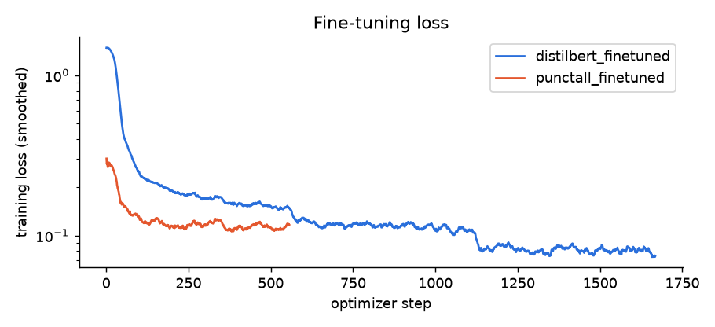
11. Model 2 – GPT-2 N-best rescoring (external language model)
src/punct/lm_rescore.py). Numbers are illustrative.Domain adaptation of the external LM
distilgpt2 (82 M parameters) is further trained for 2 epochs on the punctuated, lower-cased training
responses (exactly the format it will score). We compare the generic GPT-2 and this domain GPT-2 – this
is a second, independent test of "does fine-tuning on the domain help?". Validation perplexity measures how well each
LM predicts counselling text (lower = better).
Engineering details
- Segments of 32 words; prefix context = the tagger-best text of the previous segment (makes all segments independent, so every hypothesis can be scored in one batched GPT-2 pass).
- All tagger and LM scores are cached once, so the 130-point λ/β grid search costs nothing extra.
12. How we measure quality
For each punctuation class (COMMA, PERIOD, QUESTION) and each word:
- True positive (TP): we predicted that mark and it is correct.
- False positive (FP): we predicted the mark but the reference has something else (an insertion or a wrong mark).
- False negative (FN): the reference has the mark and we predicted something else (a deletion or wrong mark).
precision = TP / (TP + FP) "when we put a comma, how often is it right?" recall = TP / (TP + FN) "of all real commas, how many did we find?" F1 = 2·P·R / (P + R) harmonic mean – high only if both are high
- micro-F1 (headline): pool TP/FP/FN of the three classes, then compute F1. "O" is never counted as a hit.
- macro-F1: average of the three class F1s – gives the rare QUESTION class equal weight.
- SER, slot error rate = (substitutions + deletions + insertions) / number of reference marks. The speech community's metric; lower is better and it can exceed 100%.
- 95% confidence intervals: bootstrap – resample the 199 test responses with replacement 1,000 times and recompute. Paired bootstrap gives the probability that system A is not better than B on the same resamples (≈ a p-value).
13. Results
2. The external LM adds more on top. GPT-2 N-best rescoring lifts it to 80.4 (+1.4, p < 0.001); the domain-adapted GPT-2 beats the generic one (+0.8, p < 0.001).
3. Small fine-tuned beats big zero-shot. Our 278 M-parameter system (80.4) beats the 560 M-parameter FullStop-large model used zero-shot (77.4) by +3.0 (p < 0.001).
4. Task pre-training matters most. DistilBERT, which never saw a punctuation task before, reaches only 70.0 (74.8 with GPT-2): ~265 k training words are not enough to learn the task from scratch.
5. Commas gain the most from fine-tuning (62.3 → 69.3 F1): comma use is the most style- and domain-dependent mark.
Reading the table step by step
- Rule baseline (10.8): putting only a final period finds 5.7% of the marks – the task is far from trivial.
- Pre-trained zero-shot (75.4 / 77.4): public models trained on parliament speeches already transfer well; the larger one is better (+2.0, p = 0.001). They are good at PERIOD and QUESTION but weaker on COMMA (62–65 F1) and over-insert marks (581 insertions for the base model).
- Domain fine-tuning (78.9): precision rises from 74.1 to 80.6 – the model learns the counsellors' sparser comma style and stops inserting marks they would not use (insertions 581 → 342). COMMA F1 +4.5, PERIOD +1.9, QUESTION +2.1.
- + external LM (80.4): the LM mostly recovers marks the tagger missed (recall 77.4 → 80.3) while keeping precision. With the stronger tagger the optimal LM weight is small (λ = 0.5); the LM acts as a tie-breaker.
- DistilBERT (70.0 → 74.8 with LM): the weaker tagger benefits much more from the LM (+4.8) and prefers a large LM weight – validation F1 is flat (±0.1) for every λ ≥ 1, i.e. the LM effectively chooses among the tagger's top-8 candidates.
- Domain vs generic GPT-2: domain adaptation lowers validation perplexity from 44.4 to 29.9 and gives a consistent extra gain for both taggers (+0.8 and +1.8) – a second, independent confirmation that domain adaptation helps.
results/tables/end_constraint_effect.csv.• One run per configuration (CPU only); the CIs cover test-set sampling noise, not seed variance.
• XLM-R was fine-tuned for only 1 epoch and the 560 M model not at all – both are likely to improve further on a GPU.
Main table (test set, %)
| system | group | COMMA F1 | PERIOD F1 | QUESTION F1 | micro P | micro R | micro F1 | 95% CI | macro F1 | SER ↓ | val micro F1 |
|---|---|---|---|---|---|---|---|---|---|---|---|
| Rule: period at end only | baseline | 0.0 | 19.4 | 0.0 | 97.0 | 5.7 | 10.8 | 9.8–12.0 | 6.5 | 94.3 | 10.3 |
| XLM-R base punct. model (zero-shot) | pre-trained | 62.3 | 85.4 | 83.7 | 74.1 | 76.6 | 75.4 | 73.5–77.5 | 77.1 | 40.5 | 74.2 |
| XLM-R large FullStop (zero-shot) | pre-trained | 64.8 | 86.8 | 87.7 | 76.5 | 78.3 | 77.4 | 75.7–79.1 | 79.8 | 36.4 | 76.7 |
| XLM-R base punct. model + domain FT | fine-tuned | 66.8 | 87.3 | 85.8 | 80.6 | 77.4 | 78.9 | 77.2–80.8 | 80.0 | 32.7 | 79.1 |
| DistilBERT + domain FT | fine-tuned | 57.3 | 79.1 | 71.3 | 72.8 | 67.4 | 70.0 | 68.2–71.8 | 69.2 | 45.6 | 68.7 |
| DistilBERT FT + GPT-2 rescoring (generic) | fine-tuned + ext. LM | 60.1 | 82.3 | 73.2 | 76.1 | 70.1 | 73.0 | 71.2–74.7 | 71.9 | 40.9 | 72.4 |
| DistilBERT FT + GPT-2 rescoring (domain) | fine-tuned + ext. LM | 63.0 | 83.5 | 76.8 | 76.1 | 73.5 | 74.8 | 73.0–76.4 | 74.4 | 39.3 | 73.0 |
| XLM-R base FT + GPT-2 rescoring (generic) | fine-tuned + ext. LM | 68.7 | 87.5 | 85.1 | 79.4 | 79.7 | 79.5 | 77.8–81.4 | 80.5 | 32.3 | 79.3 |
| XLM-R base FT + GPT-2 rescoring (domain) | fine-tuned + ext. LM | 69.3 | 88.4 | 86.7 | 80.5 | 80.3 | 80.4 | 78.7–82.2 | 81.5 | 31.0 | 79.7 |
micro = pooled over COMMA/PERIOD/QUESTION; CI = 1,000× bootstrap over test responses; SER lower is better; best system highlighted. Val column shows the same metric on validation.
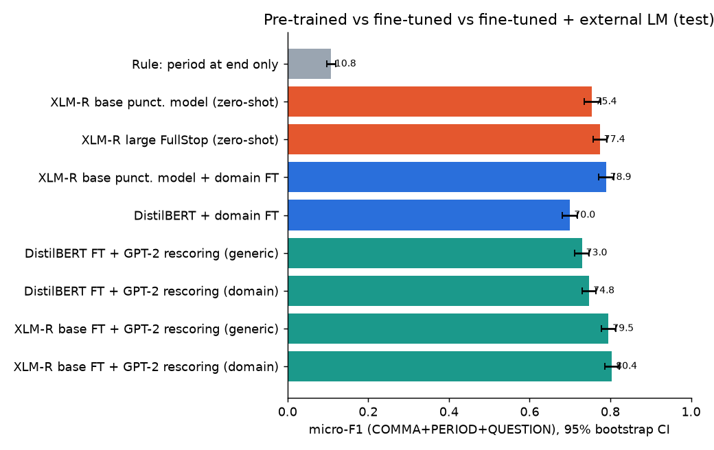
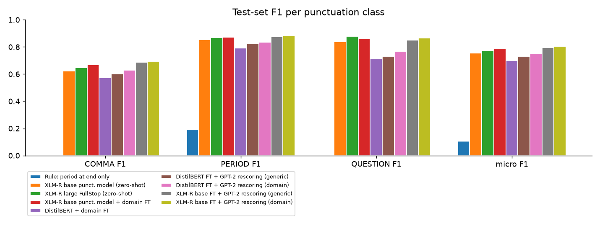
Precision and recall per class (test, %)
| system | COMMA P | COMMA R | PERIOD P | PERIOD R | QUESTION P | QUESTION R |
|---|---|---|---|---|---|---|
| Rule: period at end only | 0.0 | 0.0 | 97.0 | 10.8 | 0.0 | 0.0 |
| XLM-R base punct. model (zero-shot) | 60.6 | 64.0 | 84.4 | 86.4 | 86.3 | 81.3 |
| XLM-R large FullStop (zero-shot) | 63.7 | 65.9 | 85.9 | 87.7 | 90.4 | 85.2 |
| XLM-R base punct. model + domain FT | 72.1 | 62.3 | 85.7 | 89.0 | 87.8 | 83.9 |
| DistilBERT + domain FT | 64.1 | 51.8 | 78.0 | 80.2 | 77.9 | 65.8 |
| DistilBERT FT + GPT-2 rescoring (generic) | 66.9 | 54.5 | 81.5 | 83.1 | 83.5 | 65.2 |
| DistilBERT FT + GPT-2 rescoring (domain) | 66.6 | 59.7 | 82.1 | 84.9 | 84.5 | 70.3 |
| XLM-R base FT + GPT-2 rescoring (generic) | 69.9 | 67.5 | 85.9 | 89.2 | 87.2 | 83.2 |
| XLM-R base FT + GPT-2 rescoring (domain) | 70.9 | 67.8 | 86.9 | 90.0 | 89.7 | 83.9 |
Is the difference real? Paired bootstrap tests
| A | B | mean ΔF1 (A−B) | 95% CI of Δ | P(A not better) |
|---|---|---|---|---|
| XLM-R base punct. model + domain FT | XLM-R base punct. model (zero-shot) | +3.6 | +2.6 … +4.5 | 0.000 |
| DistilBERT + domain FT | XLM-R base punct. model (zero-shot) | -5.3 | -7.0 … -3.7 | 1.000 |
| DistilBERT + domain FT | XLM-R large FullStop (zero-shot) | -7.4 | -8.9 … -5.7 | 1.000 |
| XLM-R base punct. model + domain FT | XLM-R large FullStop (zero-shot) | +1.6 | +0.3 … +2.9 | 0.004 |
| DistilBERT FT + GPT-2 rescoring (domain) | DistilBERT + domain FT | +4.7 | +3.7 … +5.7 | 0.000 |
| DistilBERT FT + GPT-2 rescoring (generic) | DistilBERT + domain FT | +2.9 | +1.9 … +4.0 | 0.000 |
| XLM-R base FT + GPT-2 rescoring (domain) | XLM-R base punct. model + domain FT | +1.4 | +0.9 … +2.0 | 0.000 |
| DistilBERT FT + GPT-2 rescoring (domain) | DistilBERT FT + GPT-2 rescoring (generic) | +1.8 | +1.2 … +2.5 | 0.000 |
| XLM-R base FT + GPT-2 rescoring (domain) | XLM-R base punct. model (zero-shot) | +5.0 | +4.1 … +5.9 | 0.000 |
| XLM-R base FT + GPT-2 rescoring (domain) | XLM-R large FullStop (zero-shot) | +3.0 | +1.8 … +4.2 | 0.000 |
| XLM-R base FT + GPT-2 rescoring (domain) | XLM-R base FT + GPT-2 rescoring (generic) | +0.8 | +0.4 … +1.4 | 0.000 |
| XLM-R large FullStop (zero-shot) | XLM-R base punct. model (zero-shot) | +2.0 | +1.0 … +3.1 | 0.001 |
External language model
| tagger | external LM | val perplexity | best λ | best β | val F1 tagger → rescored | test F1 tagger → rescored |
|---|---|---|---|---|---|---|
| DistilBERT + domain FT | generic distilgpt2 | 44.4 | 3.0 | 1.5 | 68.7 → 72.4 | 70.0 → 73.0 |
| DistilBERT + domain FT | domain distilgpt2 | 29.9 | 8.0 | 6.0 | 68.7 → 73.0 | 70.0 → 74.8 |
| XLM-R base punct. model + domain FT | generic distilgpt2 | 44.4 | 0.2 | 0.5 | 79.1 → 79.3 | 78.9 → 79.5 |
| XLM-R base punct. model + domain FT | domain distilgpt2 | 29.9 | 0.5 | 0.5 | 79.1 → 79.7 | 78.9 → 80.4 |
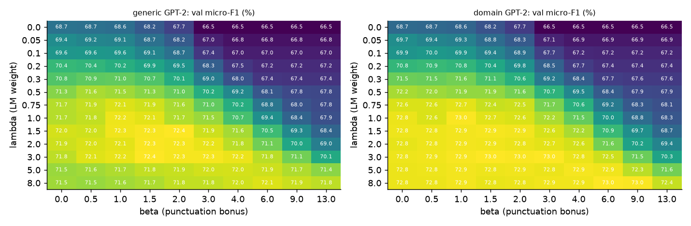
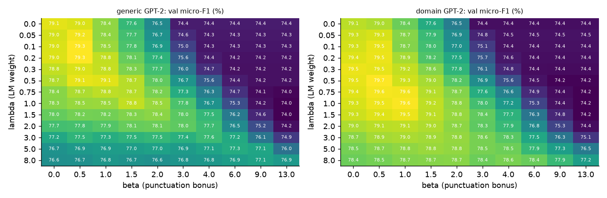
14. Test-result analysis (EDA on predictions)
The assignment asks for EDA on the test results as well. The figures below compare the best zero-shot system (FullStop large) with the best fine-tuned system (XLM-R base + domain fine-tuning + domain GPT-2).
- Confusion matrices: the single biggest error is a missed comma (≈22% of reference commas predicted as O by both systems) – many commas are optional. Next come COMMA → PERIOD (10%: the system splits a long sentence where the writer used a comma) and QUESTION → PERIOD (9–10%: the question is recognised as a sentence end but not as a question). The fine-tuned system inserts fewer false commas (291 vs 404 O → COMMA) and finds more periods (90% vs 88%).
- Error types: fine-tuning mainly removes insertions (the zero-shot models punctuate more often than counsellors do: 581 → 342 for the base model); the external LM mainly removes deletions (476 → 392).
- Sentence length: both systems are best on short and medium sentences (≈0.83 micro-F1 up to 20 words) and degrade on long ones (≈0.65 for 46+ words), where many optional comma positions exist. The fine-tuned system is ahead everywhere except the longest bucket, where the two are equal within noise (few sentences).
- Missed words: commas are most often missed after you, so, and, relationship – positions where a comma is optional. Missed periods are spread thinly over common sentence-final words (him, you, them, do), i.e. two short sentences merged into one. Missed questions are spread over many different words: each is a single rare (often rhetorical) question.
- Examples: in most responses the fine-tuned output matches the reference exactly or differs only in optional commas (e.g. "work on building win win agreements with her, and follow through on them" – both versions are acceptable English).
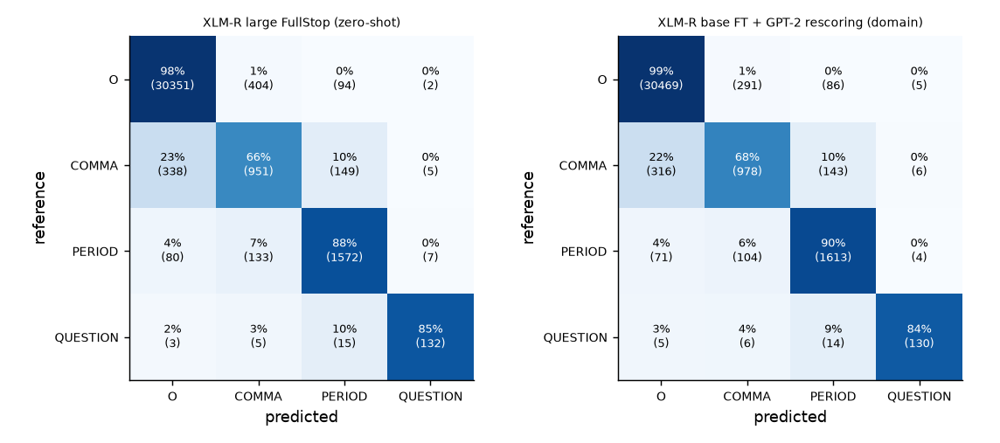
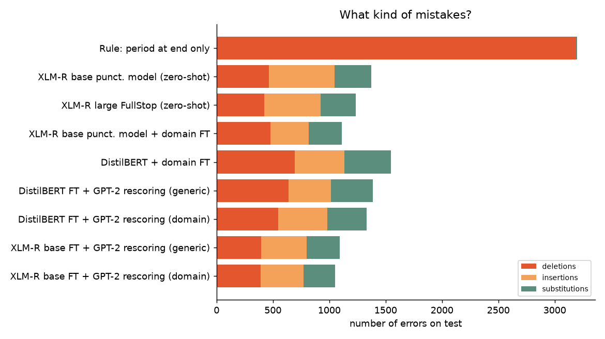
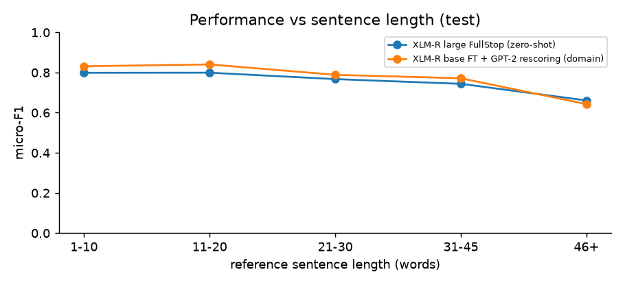
Words where the best system most often missed the mark
| reference label | word (times missed) |
|---|---|
| COMMA | you (15), relationship (8), so (8), yourself (7), and (6), therapist (5), world (4), friend (4), time (4), problem (4) |
| PERIOD | him (3), you (3), them (3), do (3), it (3), first (2), life (2), not (2), that (2), health (2) |
| QUESTION | voices (1), story (1), disability (1), down (1), for (1), emotions (1), way (1), issue (1), yet (1), regard (1) |
Example outputs
Test response 60
| INPUT | yes this emotional abuse there is no abuse without emotional abuse his abuse is demeaning and can have lasting negative impact on your perspective of your self and people around you please find someone support to talk to |
|---|---|
| REF | Yes, this emotional abuse. There is no abuse without emotional abuse. His abuse is demeaning and can have lasting negative impact on your perspective of your self and people around you. Please find someone support to talk to. |
| ZS | Yes, this emotional abuse. There is no abuse without emotional abuse. His abuse is demeaning and can have lasting negative impact on your perspective of your self and people around you. Please find someone support to talk to. |
| FT | Yes, this emotional abuse. There is no abuse without emotional abuse. His abuse is demeaning and can have lasting negative impact on your perspective of your self and people around you. Please find someone support to talk to. |
Test response 190
| INPUT | hard to say a whole lot without knowing more however if you focus your attention on her what she's saying what she's feeling instead of trying to make yourself heard and understood first that's often a good step also work on building win win agreements with her and follow through on them those are the areas i see men fall short on most often hope that helps |
|---|---|
| REF | Hard to say a whole lot without knowing more. However, if you focus your attention on her, what she's saying, what she's feeling instead of trying to make yourself heard and understood first, that's often a good step. Also, work on building win win agreements with her, and follow through on them. Those are the areas I see men fall short on most often. Hope that helps. |
| ZS | Hard to say a whole lot without knowing more. However, if you focus your attention on her, what she's saying, what she's feeling, instead of trying to make yourself heard and understood first, that's often a good step. Also, work on building win win agreements with her and follow through on them. Those are the areas I see men fall short on most often. Hope that helps. |
| FT | Hard to say a whole lot without knowing more. However, if you focus your attention on her what she's saying, what she's feeling instead of trying to make yourself heard and understood first, that's often a good step. Also, work on building win win agreements with her and follow through on them. Those are the areas I see men fall short on most often. Hope that helps. |
Test response 155
| INPUT | this interaction with your boss seems strange it is tricky to know how to handle workplace conflicts but there are typically resources in place to help employees and mangers communicate successful and feel confident that they are being treated fairly at work is there an hr department that you can use as a mediator |
|---|---|
| REF | This interaction with your boss seems strange. It is tricky to know how to handle workplace conflicts, but there are typically resources in place to help employees and mangers communicate successful and feel confident that they are being treated fairly at work. Is there an hr department that you can use as a mediator? |
| ZS | This interaction with your boss seems strange. It is tricky to know how to handle workplace conflicts, but there are typically resources in place to help employees and mangers communicate successful and feel confident that they are being treated fairly at work. Is there an hr department that you can use as a mediator? |
| FT | This interaction with your boss seems strange. It is tricky to know how to handle workplace conflicts, but there are typically resources in place to help employees and mangers communicate successful and feel confident that they are being treated fairly at work. Is there an hr department that you can use as a mediator? |
Test response 187
| INPUT | i would first suggest you sitting down with him and voicing your concerns about how distant he has been or more importantly you have felt that he is this will give clarification to the situation as we need to remember that everyone's perception can be different remember that relationships take work and take communication |
|---|---|
| REF | I would first suggest you sitting down with him and voicing your concerns about how distant he has been, or more importantly you have felt that he is. This will give clarification to the situation as we need to remember that everyone's perception can be different. Remember that relationships take work and take communication. |
| ZS | I would first suggest you sitting down with him and voicing your concerns about how distant he has been or, more importantly, you have felt that he is. This will give clarification to the situation, as we need to remember that everyone's perception can be different. Remember that relationships take work and take communication. |
| FT | I would first suggest you sitting down with him and voicing your concerns about how distant he has been or, more importantly, you have felt that he is. This will give clarification to the situation, as we need to remember that everyone's perception can be different. Remember that relationships take work and take communication. |
Test response 41
| INPUT | the greatest sex experience will be with someone who you feel connected to outside the bed this is something that you should feel comfortable in talking with your partner about the relationship needs to be strong before moving to the bed anyways if the love is there he will understand your fears and make you feel comfortable making it a great experience |
|---|---|
| REF | The greatest sex experience will be with someone who you feel connected to outside the bed. This is something that you should feel comfortable in talking with your partner about. The relationship needs to be strong before moving to the bed anyways. If the love is there, he will understand your fears and make you feel comfortable making it a great experience. |
| ZS | The greatest sex experience will be with someone who you feel connected to outside the bed. This is something that you should feel comfortable in talking with your partner about. The relationship needs to be strong before moving to the bed. Anyways, if the love is there, he will understand your fears and make you feel comfortable, making it a great experience. |
| FT | The greatest sex experience will be with someone who you feel connected to outside the bed. This is something that you should feel comfortable in talking with your partner about. The relationship needs to be strong before moving to the bed anyways. If the love is there, he will understand your fears and make you feel comfortable, making it a great experience. |
Test response 17
| INPUT | strengthen your own belief in your right to a decent life and respect of who you are from the brief description you write your husband has very limited capacity to recognize how others feel and even less capacity to empathize with the person the best you can do is convince yourself of your own worth and associate with others who believe similarly about your qualities |
|---|---|
| REF | Strengthen your own belief in your right to a decent life and respect of who you are. From the brief description you write, your husband has very limited capacity to recognize how others feel and even less capacity to empathize with the person. The best you can do is convince yourself of your own worth and associate with others who believe similarly about your qualities. |
| ZS | Strengthen your own belief in your right to a decent life and respect of who you are. From the brief description you write, your husband has very limited capacity to recognize how others feel and even less capacity to empathize with the person. The best you can do is convince yourself of your own worth and associate with others who believe similarly about your qualities. |
| FT | Strengthen your own belief in your right to a decent life and respect of who you are. From the brief description you write, your husband has very limited capacity to recognize how others feel and even less capacity to empathize with the person. The best you can do is convince yourself of your own worth and associate with others who believe similarly about your qualities. |
Test response 115
| INPUT | orbetter yet is it you still thinking about the other girl i am sure his cheating hurt you emotionally and may have affected your sexual performance as well make sure the other girl is out the picture on your end as well sounds like something the both of you need to have a calm and adult conversation about |
|---|---|
| REF | Orbetter yet. Is it you still thinking about the other girl? I am sure his cheating hurt you emotionally and may have affected your sexual performance as well. Make sure the other girl is out the picture on your end as well. Sounds like something the both of you need to have a calm and adult conversation about. |
| ZS | Orbetter, yet is it you still thinking about the other girl? I am sure his cheating hurt you emotionally and may have affected your sexual performance as well. Make sure the other girl is out the picture on your end as well. Sounds like something the both of you need to have a calm and adult conversation about. |
| FT | Orbetter yet, is it you still thinking about the other girl? I am sure his cheating hurt you emotionally and may have affected your sexual performance as well. Make sure the other girl is out. The picture on your end as well sounds like something the both of you need to have a calm and adult conversation about. |
Test response 110
| INPUT | part of handling stress is making sure that your perception of the stress is accurate sometimes stress can seem more than it really is one thing that i encourage my clients to do is to ask themselves what is this stressor really about simplifying stress is a key to minimizing stress and leads to feeling less stressed out |
|---|---|
| REF | Part of handling stress is making sure that your perception of the stress is accurate. Sometimes stress can seem more than it really is. One thing that I encourage my clients to do is to ask themselves, what is this stressor really about? Simplifying stress is a key to minimizing stress and leads to feeling less stressed out. |
| ZS | Part of handling stress is making sure that your perception of the stress is accurate. Sometimes, stress can seem more than it really is. One thing that I encourage my clients to do is to ask themselves, what is this stressor really about? Simplifying stress is a key to minimizing stress and leads to feeling less stressed out. |
| FT | Part of handling stress is making sure that your perception of the stress is accurate. Sometimes stress can seem more than it really is. One thing that I encourage my clients to do is to ask themselves, what is this stressor really about? Simplifying stress is a key to minimizing stress and leads to feeling less stressed out. |
15. Challenges and how they were solved
| # | challenge | solution |
|---|---|---|
| 1 | 3,710 "glued" sentences (with.Seriously) – a missing space would silently delete a period label. | Regex that inserts a space between a sentence-ending mark and a following capital letter (case-sensitive, before lower-casing). |
| 2 | Encoding noise: 9,412 non-breaking spaces, curly quotes, bullets, ellipses. | Unicode NFKC + explicit character map; bullets/line breaks become sentence ends. |
| 3 | URLs, e-mails, base64 images, emoticons :) – their dots/colons create fake punctuation. | Removed with regexes before labelling. |
| 4 | 60 Spanish responses. | Language filter (non-ASCII ratio + Spanish stop-word ratio). |
| 5 | Duplicates (760 rows; 438 more after cleaning) – would leak test answers into training. | De-duplicate on the cleaned word sequence, then split by response. |
| 6 | Abbreviations (e.g., Dr.) look like sentence ends. | Abbreviation list – their dot is not a PERIOD label. |
| 7 | Words split into several sub-words. | Label only the first sub-word; others −100 (ignored). |
| 8 | Responses longer than the model window; window edges hurt accuracy. | Overlapping windows; each word takes the prediction with the most context. |
| 9 | "Last word is always a period" shortcut. | Random-length windows cut across response boundaries. |
| 10 | Different label sets in public models (0 . , ? - :). | Generic label folding (sum probabilities); for fine-tuning, map our labels onto the model's own head instead of replacing it. |
| 11 | Strong class imbalance (90% O). | Per-class/micro/macro F1 + SER instead of accuracy; β bonus tuned on validation. |
| 12 | No GPU locally; a network proxy limited downloads to ~150 KB/s per connection. | DistilBERT (fast) for the generic-LM experiment, only 1 epoch for XLM-R, no fine-tuning of the 560 M FullStop model; parallel range downloader (scripts/00_download_models.py); every expensive step caches its output; the notebook runs on Colab GPU unchanged. |
| 13 | Fair λ/β tuning without touching test data. | Grid search on validation only; test evaluated once. The first grid (λ ≤ 1) put the best DistilBERT setting on its edge, so the grid was widened (finally λ ≤ 8, β ≤ 13; DistilBERT kept preferring a strong LM) and re-run (still on validation only). |
| 14 | Found in error analysis: fine-tuned models left the last word of ≈60% of validation responses unpunctuated (zero-shot models: 0%). Cause: random training windows taught "a window end is usually not a sentence end". | End-of-input decoding constraint (§8), validated on the validation set (+2.2 micro-F1 for the fine-tuned taggers, no effect on zero-shot models) and applied to all systems. Table results/tables/end_constraint_effect.csv reports every system with and without it. Training-side fix for future work: add windows that end at real text ends. |
16. Why each choice was made
- Token classification instead of seq2seq (T5/LLM rewriting): the words must not change (an ASR transcript must stay verbatim, especially in clinical use), it is 10–100× faster, every decision is a calibrated probability, and it is the state-of-the-art formulation for this task. A generative model can hallucinate or drop words.
- 4 classes: standard in the literature;
!,;,:are too rare to learn reliably from ~1.6k answers. - Encoder (bidirectional) for tagging, decoder (GPT-2) for rescoring: each is used where it is strongest – the encoder sees right context, the decoder scores fluency of complete hypotheses.
- DistilBERT: uncased (matches ASR output), small enough to train on CPU and deploy with low latency.
- Split by response with a separate test set: prevents leakage and keeps the final numbers honest.
- Two pre-trained baselines of different size: shows the result is not an artefact of one weak baseline.
- Bootstrap significance: 199 test responses is a modest sample; differences must be shown to be real, not noise.
17. Limitations and future work
- Clean written text ≠ speech. Real ASR output contains recognition errors, fillers ("um"), disfluencies and spoken numbers. Next step: train on ASR-noised text (simulate errors or run TTS→ASR) and use prosody (pauses, pitch) from the audio – pauses are the strongest cue for commas/periods.
- Casing is not restored; add a joint truecasing head (multi-task: punctuation + capitalisation).
- More classes (exclamation, colon, quotes) need more data – could use a larger synthetic corpus from public counselling/medical text.
- Streaming: a production dictation system must punctuate in real time with limited look-ahead; train with right-truncated windows and measure latency.
- Deployment: distil/quantise the tagger (ONNX, int8) for on-device use; the external LM can be replaced with a small n-gram (KenLM) model for speed.
- Domain-adaptive pre-training (continue masked-LM training of the encoder on in-domain text before fine-tuning) is another way to use an internal LM; worth trying with a larger unlabelled clinical corpus.
- Single random seed per configuration on CPU; with a GPU, report mean ± std over several seeds.
- Fine-tune the large model. The 560 M FullStop model is the strongest zero-shot system; fine-tuning it on the domain (impossible on this CPU in the time available, ~30 min on a Colab GPU) is the obvious next experiment. More XLM-R epochs (only 1 was affordable) would likely help too.
- Training windows that end at the real end of a text, so the end-of-input constraint is no longer needed.
- Responses contain signatures (e.g. a credential line ending in "NCC") that behave like headings; better cleaning could remove them.
18. Code map and how to run
| file | what it does |
|---|---|
src/punct/labels.py | label set, character→label folding, render() words+labels → text |
src/punct/data.py | cleaning, language filter, word/label extraction, split, synthetic windows |
src/punct/tagger.py | Tagger: load any HF token-classification model, label folding, sub-word alignment, training loop, sliding-window inference |
src/punct/lm_rescore.py | ExternalLM (GPT-2 fine-tuning, perplexity, scoring), N-best beam, rescoring cache, decoding |
src/punct/metrics.py | confusion matrix, per-class P/R/F1, micro/macro F1, SER |
scripts/01_build_dataset.py … 05_evaluate_report.py | pipeline steps (dataset → EDA → taggers → external LM → evaluation) |
scripts/predict.py | punctuate any text from the command line |
notebooks/Punctuation_Restoration.ipynb | self-contained Colab notebook (embeds all code, runs every step, shows all outputs) |
# local (CPU or GPU) python scripts/01_build_dataset.py python scripts/02_eda.py python scripts/03_run_tagger.py --tag punctall_zeroshot --model kredor/punctuate-all python scripts/03_run_tagger.py --tag fullstop_zeroshot --model oliverguhr/fullstop-punctuation-multilang-large python scripts/03_run_tagger.py --tag distilbert_finetuned --model distilbert-base-uncased --train --epochs 3 --lr 5e-5 python scripts/03_run_tagger.py --tag punctall_finetuned --model kredor/punctuate-all --train --epochs 1 --lr 2e-5 python scripts/04_external_lm.py --tagger distilbert_finetuned python scripts/05_evaluate_report.py python scripts/predict.py "have you talked to anyone about it"
19. Interview questions and answers
- Q. Why did you frame punctuation restoration as token classification?
- Because the words are fixed – only the gaps change. Labelling each word with "the mark after it" gives one classification per word, is fast, cannot alter or hallucinate words (important for clinical transcripts), and gives probabilities that can be combined with other models such as an external LM.
- Q. What exactly is "internal" and "external" LM in your system?
- Internal: the pre-trained transformer encoder inside the tagger – its pre-training (masked LM) is what gives it knowledge of English. External: a separate GPT-2 that scores complete punctuated hypotheses; its score is combined log-linearly with the tagger score (N-best rescoring, like LM fusion in ASR).
- Q. How did you create a dataset without manual labels?
- Self-supervision: the psychologists' responses are already punctuated. After cleaning, I remove punctuation to create the input and use the removed marks as labels. Training windows are random cuts of the concatenated responses, so sentence boundaries appear anywhere in a window.
- Q. How do you handle words that the tokenizer splits into several pieces?
- Only the first sub-token carries the label; the rest get −100 so the loss ignores them. At inference I read the prediction at the first sub-token of every word.
- Q. Why not accuracy?
- 90% of words have no punctuation; predicting "O" everywhere gives 90% accuracy and is useless. Per-class F1, micro/macro-F1 over the punctuation classes and slot error rate measure what matters.
- Q. Why is QUESTION the hardest class?
- It is rare (0.45% of words, ~1.2k training examples), and the cue (what/do/are…) is at the start of the sentence while the label is at the end. Many counselling questions are also rhetorical or embedded ("I wonder if you have…").
- Q. Why is COMMA harder than PERIOD?
- Commas are partly optional and stylistic – two good writers disagree on many commas – so even the reference is "noisy". Sentence ends are more constrained by grammar.
- Q. How did you make sure the test score is trustworthy?
- De-duplication after cleaning, split by response, a test set used only once, hyper-parameters (epochs, λ, β) chosen on validation, and bootstrap confidence intervals plus paired bootstrap tests.
- Q. How would you adapt this for Augnito's medical dictation?
- Train on in-domain medical text with ASR-style noise (numbers spoken as words, fillers, recognition errors), add acoustic/prosodic features (pause length is a strong period/comma cue), add a casing head, use streaming windows with limited look-ahead, and distil/quantise for latency. Section-specific punctuation (lists in prescriptions, colons in headings like "Impression:") would need extra classes.
- Q. What does λ = 0 mean in the rescoring?
- The LM is ignored, so the result equals the tagger alone. Including λ = 0 in the validation grid guarantees the rescorer is never worse than the tagger on validation.
- Q. What is the role of β?
- A language model assigns lower probability to longer texts, and every punctuation mark is an extra token, so an LM alone prefers fewer marks. β is a per-mark bonus that cancels this length bias – the same idea as the word-insertion penalty in speech recognition.
- Q. What would you try with more time / a GPU?
- Larger encoders (DeBERTa-v3, RoBERTa-large), several seeds, domain-adaptive MLM pre-training, joint casing, a CRF layer or LM-fused beam search directly over the tagger lattice, and noisy ASR training data.
- Q. Your fine-tuned DistilBERT is worse than a zero-shot model. Doesn't that mean fine-tuning failed?
- No – it shows that task pre-training matters more than domain data at this data size. The zero-shot XLM-R model was already trained on millions of punctuated sentences; DistilBERT had to learn punctuation from only ~265 k words. The fair test of fine-tuning compares the same model before and after: the XLM-R punctuation model improves significantly after domain fine-tuning (see §13). The practical recipe is: start from a model that already knows the task, then adapt it to the domain.
- Q. What was the most surprising thing you found?
- That the fine-tuned models often left the last word of a response unpunctuated. My training windows were cut at random positions, so the model learned "the end of a window is usually not the end of a sentence" – but at inference the end of the input is a sentence end. I found it in error analysis, confirmed it on validation (≈60% of fine-tuned outputs, 0% of zero-shot outputs), and fixed it with an end-of-input decoding constraint applied to all systems. The better long-term fix is to include windows that end at real text ends during training.
- Q. Why did the external LM help DistilBERT much more than XLM-R?
- A weaker tagger leaves more correctable mistakes, and its N-best lists contain the right answer more often below rank 1. A strong tagger is already confident, so the LM mostly confirms its choice – diminishing returns, but still a significant gain.
- Q. Is 199 test responses enough?
- It is ~36 k words and ~3.4 k punctuation marks, enough for 1–2 point CIs on micro-F1. Small differences (<1 point) between the strongest systems are not significant, which is why I report bootstrap CIs and paired tests instead of single numbers.
20. Glossary
| ASR | automatic speech recognition – speech → text |
| token classification | predicting one label for every token/word of a sequence |
| sub-word / WordPiece / SentencePiece | splitting rare words into frequent pieces so the vocabulary stays small |
| pre-training / fine-tuning | learn general language on huge text, then adapt to a small labelled task |
| zero-shot | applying a model to a new domain with no training on it |
| perplexity | exp(average negative log-likelihood per token); how "surprised" an LM is – lower is better |
| N-best / beam search | keep the K highest-scoring partial label sequences while moving left to right |
| rescoring / LM fusion | re-ranking candidate outputs with a second model's score |
| micro / macro F1 | F1 from pooled counts / average of per-class F1 |
| SER | slot error rate: (S+D+I)/N reference marks |
| bootstrap CI | re-sample the test set with replacement to estimate the variability of a metric |
| leakage | information from the test set reaching training, inflating scores |